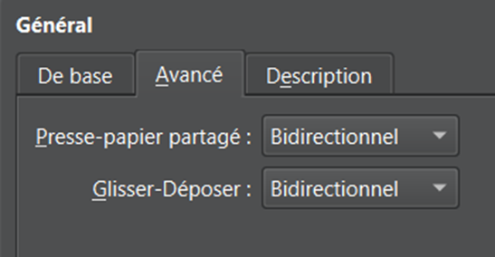

Configuration Initiale
Nous avons choisi comme logiciel d’utiliser VirtualBox, il nous a été recommandé par un programmeur et avons donc suivit son avis. Quand au système d’exploitation à installer, nous avons choisit Ubuntu, puisque c’est une distribution de linux plutot simple à utiliser, ce qui nous facilitera la vie. Une fois VirtualBox installé, nous avons créé une nouvelle machine virtuelle avec les réglages suivants :
Elle est nommée Ubuntu SAE (nom assez éloquent), sa localisation sera laissée par défault, ce sera plus simple de la retrouver. Nous donnerons un fichier ISO plus tard, pour l’instant elle sera vide. Nous indiquons enfin que la machine sera sous Ubuntu Linux.
Configuration Matérielle
Nous lui donnons 4 gigas de RAM, c’est ce qui est recommandé, Ubuntu est plutôt léger, il est donc pas nécessaire d’en donner plus. Lui donner maximum de RAM serait même nocif pour notre machine puisqu'il n’y en aurait plus sur notre machine physique. Nous lui donnons quatre processeurs puisque nous allons installer un serveur, cela lui permettra de le faire tourner sans impacter la machine.
Configuration du Stockage
Nous créons un disque dur virtuel (un fichier) de 25 gigas, celà nous permettra de télécharger ce que l’on veut sur notre machine tout en ne prenant pas toute la place sur notre machine physique (ce fichier ne fait pas 25 gigas tant qu’il n’est pas remplit dasn tout les cas).
Configuration du Système
On va ensuite dans les réglages, afin de donner à notre machine virtuelle un système d’exploitation (sous la forme d’un fichier ISO, autrement dit un faux disque), et on le sélectionne.
Configuration Finale
On peut ensuite lancer la machine, créer notre premier utilisateur selon la syntaxe demandée, on suit ensuite le tutoriel d’installation d’Ubuntu, puis on redémarre la machine. Avant de la redémarrer, on active le presse-papier et le glisser-Déposer bidirectionnel. Celà nous sera utile pour copier des commandes par exemple...
